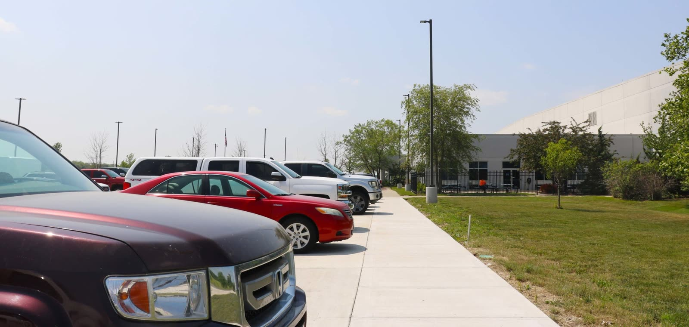

The Price Is In Writing
A written proposal with the scope, materials and full number. If something unexpected turns up under your driveway, we talk before we bill.
Max Paving started in 2014 doing small private residential driveways, and we never stopped taking them. The company grew into commercial contracts, but a homeowner’s driveway still gets the same crews and the same attention as a warehouse truck lane.
That matters more than it sounds. Residential concrete and asphalt is where corners usually get cut, because a homeowner can’t see a thin base or a weak mix until winter finds it. We build your driveway to the standard the commercial work demands, because it’s the same people.

New pours and full replacements, built on a real base with the reinforcement Missouri clay demands.
Learn moreThe lower-upfront-cost option, done right: compacted base, proper thickness, clean edges.
Learn moreNew walks, trip-hazard replacements, and the sections the city tagged for repair.
Learn moreHVAC pads, shed and garage slabs, patios and equipment pads, poured level and drained right.
Learn moreSettled panels, spalled surfaces and cracked sections, removed and replaced joint to joint.
Learn moreDecorative finishes for driveways, walks and patios that hold up to KC winters.
A written proposal with the scope, materials and full number. If something unexpected turns up under your driveway, we talk before we bill.
Same crews, same mix standards, same compaction. Residential is where thin bases and weak mixes hide; ours don’t change when the job gets smaller.
Fully licensed and insured, and we answer the phone, including the follow-up call after the job is done.
Forms out, spoils hauled, site raked, and the driveway usable on the schedule we gave you.
A one-year written warranty on labor and workmanship. If something settles or cracks that shouldn’t within that year, we fix it.
Both are good driveways when they’re built right. Concrete costs more up front and lasts longer; asphalt costs less and needs more upkeep. It depends on your budget, how long you’ll own the house and what’s under the driveway now. We’ll give you both numbers if you want the comparison.
Hired Max Paving a few years back to pave my driveway and pour a concrete pad for one of my buildings. I thought they did an incredible job — and what really proved it was how everything held up afterward. Both the driveway and the pad have lasted incredibly well through everything Missouri weather throws at them. No cracking, no settling, no surprises. That’s exactly why they’re the first call I made when I had more work come up. Gary and the crew did it right the first time. Highly recommend.
I’ve been working with Gary and Max Paving for 8-9 years now and I would highly recommend their services. Gary is fantastic to work with, great with customers, and his crews do fantastic work.
Max Paving was a pleasure to work with from start to finish. Their pricing was fair and straightforward. They had excellent communication from start to finish and we always knew what was happening and when. What stood out most was their willingness to do whatever it took to make sure we were happy with the results. Highly recommend.
Five steps, one company, no handoffs. Here’s what hiring us actually looks like.
We walk the property, measure it, and talk through what you actually need.
Scope, materials, and the full price in writing. We look for problems before we price, not after.
Planned around weather and your operations. If the schedule moves, you hear it from us first.
Excavation through finished surface, every phase by our own crews.
We walk the finished work with you, and back it with a written guarantee.
Tell us about the project and we’ll come walk it, measure it, and put the price in writing. No pressure, no salespeople. Rather just talk? Call (816) 220-7777.
Prefer to talk? (816) 220-7777